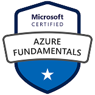
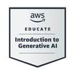

Oziel Mancilla
Audio engineer, DevOps engineer
Resumen u Objetivo Profesional:
Soy un apasionado de la tecnología con un título en Audio y Producción Musical. Mi curiosidad me llevó a aprender sobre
DevOps, desarrollando funciones como DevOps Engineer. Tengo un entusiasmo innato por aprender cosas nuevas y practico la
filosofía DIY (Hazlo tú mismo). La música es una de mis grandes pasiones.
Educación
- Bachelor of Audio Engineer and Production Degree G-Martell/México - 08/2013 - 05/2018
Experiencia Laboral
- Senior Developer INNOVA Bienestar/CONAGUA | 04/2024 - 01/2025
Administración de proyecto y de GITLAB.
- Administración de proyecto en Azure DevOps
- Definición de estrategias de Branching en git.
- Configuración de repositorios en git para los proyectos, creación de ramas y migración de proyectos a nuevos
repositorios.
- Configuración de azure-pipelines.yml para el CD del proyecto.
- Revisión de pull request y aprobación de los mismos.
- Ambientación de servidores de desarrollo y QA
- Configuración de sitios web mediante IIS y .NET en los ambientes de desarrollo y QA
- Configuración de servidores para aplicativo con python y poetry
- Administración de repositorios en GITLAB
- Administración de usuarios en GITLAB
- Asistencia a usuarios de GITLAB
- Estrategia de workflow en GITLAB
- Estrategia de lineamientos de Commits
- Capacitación de equipos sobre git y GITLAB
- Documentación de workflow
- Documentación de despliegue con Docker Compose y miniKube
- Configuración de GitLab para la implementación del sistema mediante Docker Swarm
- Se configuró GitLab para integrarse con Active Directory para la gestión de usuarios.
- Se configuró GitLab para notificaciones por correo electrónico mediante un servicio SMTP.
- Se configuró el administrador PHP para que LDAP funcione con OpenLDAP.
- Se diseñó y configuró el archivo Docker Swarm para garantizar la persistencia de los datos en el servidor.
- Senior Developer INFOTEC/CONAGUA | 12/2023 - 04/2024
Administración de proyecto, liderazgo del equipo.
- Administración de los recursos
- Asignación de actividades con el líder técnico.
- Definición de estrategias de Branching en git.
- Configuración de repositorios en git para los proyectos, creación de ramas y migración de proyectos a nuevos
repositorios.
Configuración de azure-pipelines.yml para el CD del proyecto.
Revisión de pull request y aprobación de los mismos.
Ambientación de servidores de desarrollo y UAT
Configuración de sitios web mediante IIS y .NET en los ambientes de desarrollo y UAT
- Junior Developer INFOTEC/CONAGUA | 05/2021 - 12/2023
Administración del proyecto en Azure DevOps, creación de repositorios, configuracion de .yml para CI/CD.
Diseño de arquitectura para el proyecto, definición de servidores de compilación y servidores de implementación.
Configuración de servidores de compilación, ambientación del servidor para compilar la solución en .net, instalación del
agente de compilación y configuración del mismo para recibir trabajos desde Azure DevOps.
Configuración de servidores de implementación, instalación de IIS, instalación y configuración de agente de
implementación para recibir tareas desde Azure DevOps y levantar sitios web.
Definición de estrategias de Branching en git.
Configuración de repositorios en git para los proyectos, creación de ramas y migración de proyectos a nuevos
repositorios.
Configuración de azure-pipelines.yml para el CD del proyecto.
Configuración de los Releases para la implementación de los sitios web.
Configuración de azure-pipelines.yml para creación y publicación de paquetes Nugets.
- Desarrollo Aplicación Movil Lifecom | 07/2019 - 04/2020
Análisis, diseño y desarrollo de interfaz gráfica en Supernova, desarrollé prototipos funcionales para proporcionarle a
los desarrolladores backend la interfaz de la app.
Compilación y publicación de aplicación Gmoments en Google Play Store y App Store.
Habilidades
- Azure DevOps
- GitLab
- GitHub
- IIS (Internet Information Services)
- Git
- Visual Studio
- Visual Studio Code
- Figma
- Sketch
- Azure
- Dotnet CLI
- Pipelines
- YML
- Windows Server
- SQL
- PostgreSQL
- MySQL
- MariaDB
- Azure Data Studio
- Docker
- Docker Compose
- Docker Swarm
- Docker Desktop
- Kubernetes
- Kubectl
- miniKube
- Ngninx
- Windows
- MacOs
- Debian
- Ubuntu
- Pro Tools
- Cubase
- Fl Studio
- Behringer x32
- Yamaha
Premios, certificaciones u otros
logros
- Microsoft
- Azure Fundamentals | Issued: 09/27/2022 |

- Azure AI Fundamentals | Issued: 06/22/2022 |

- AWS Educate
- Introduction to Generative AI | Issued: 03/07/2025 |

- CERTIPROF
- Scrum Master | Issued: 22/05/2024 |
- AUDINATE
- Dante Certification Level 1 & 2 | Issued: 11/04/2020 |
- FREECODECAMP
- Responsive Web Design | Issued: 06/01/2021 |

- UDEMY
- Web and Mobile Design with Sketch | Issued: 11/04/2020 |
- Docker: From Beginner to Expert | Issued: 07/26/2021 |